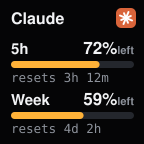
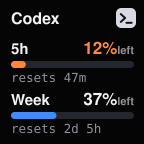
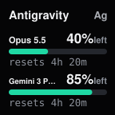

The keys sort themselves: sessions waiting for you first, then working ones, then the ones that just finished. They hold still for a moment after you press one, so nothing moves under your finger.
✔
Approve from the deck
Claude Code and Codex permission requests show the exact command on the key. Hold it to allow, or use the Allow and Deny keys. The terminal prompt still works, and whichever answers first wins.
↗
Jump to the window
A press brings that session's terminal or editor to the front: the right Windows Terminal tab, VS Code, Terminal.app or iTerm2 tab, or the herdr pane.
⚡
One click per agent
Press Connect in the key settings. The plugin adds its hooks (with a backup) and removes only its own entries when you disconnect. It uses Stream Deck's built-in Node.js, so there's nothing else to install.
◎
Everywhere you code
Windows, macOS, agents inside WSL, and servers you reach over SSH. A remote machine needs only curl and python3.
⧉
24+ agents through herdr
Running agents in herdr? Cursor, Copilot, OpenCode, Droid, Amp, Grok, Kiro, Qwen, Cline, Pi and more show up too, and the keys can answer their prompts.
⛨
Private by design
A local endpoint on 127.0.0.1 with a token only your account can read. No account, no analytics. Only an Agent Limits key asks Anthropic or Google for your own usage.
◔
Know how much is left
An Agent Limits key shows how much of your usage is left before you hit the wall, and when it comes back. Place one key per agent.
- Claude Code and Codex: the 5-hour and weekly windows, each with a bar and the time until it resets.
- Antigravity: the quota of each model, the most used first.
- The bar turns orange at 25 % left and red at 10 %. Press the key to refresh.


